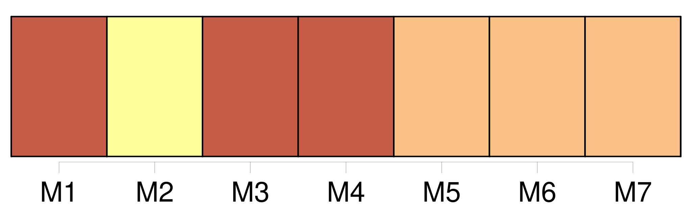
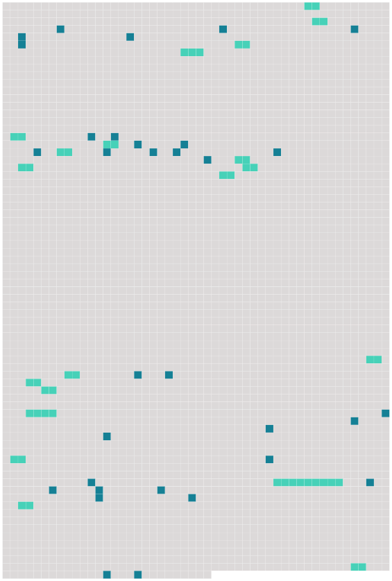

Longueur nb maillons : 52 mentions |
  |
L'officier regarda longtemps les pelouses inondées, et, là-bas, l'Andelle gonflée qui débordait ; et il tambourinait contre la vitre une valse du Rhin, quand un bruit le fit se retourner : c'était [son second] , le baron de Kelweingstein, ayant le grade équivalent à celui de capitaine. [2 phrases] [Le capitaine] , un petit rougeaud à gros ventre, sanglé de force, portait presque ras [son] poil ardent, dont les fils de feu auraient fait croire, quand ils se trouvaient sous certains reflets, [sa] figure frottée de phosphore.
Deux dents perdues dans une nuit de noce, sans qu' [il] se rappelât au juste comment, [lui] faisaient cracher des paroles épaisses qu'on n'entendait pas toujours ; et [il] était chauve du sommet du crâne seulement, tonsuré comme un moine, avec une toison de petits cheveux frisés, dorés et luisants, autour de ce cerceau de chair nue. Le commandant [lui] serra la main, et il avala d'un trait sa tasse de café ( la sixième depuis le matin ), en écoutant le rapport de [son subordonné] sur les incidents survenus dans le service ; puis tous deux se rapprochèrent de la fenêtre en déclarant que ce n'était pas gai.
Le major, homme tranquille, marié chez lui, s'accommodait de tout ; mais [le baron capitaine] , viveur tenace, coureur de bouges, forcené trousseur de filles, rageait d'être enfermé depuis trois mois dans la chasteté obligatoire de ce poste perdu. [12 phrases] Mais [le baron] , soudain, se redressa. Une révolte [le] secouait ; [il] jura : « Nom de Dieu, ça ne peut pas durer, il faut inventer quelque chose à la fin.
»
» [1 phrases]
»
» [J'] enverrai à Rouen XXXLe DevoirXXX, qui nous ramènera des dames ; [je] sais où les prendre. [1 phrases]
»
»
» [1 phrases]
Debout, avec sa figure impassible, il reçut les instructions [du baron] , puis il sortit ; et, cinq minutes plus tard, une grande voiture du train militaire, couverte d'une bâche de meunier tendue en dôme, détalait sous la pluie acharnée, au galop de quatre chevaux. [37 phrases]
» [1 phrases]
Les cheveux du commandant semblaient moins gris que le matin ; et [le capitaine] s'était rasé, ne gardant que [sa] moustache, qui [lui] mettait une flamme sous le nez. [1 phrases] A six heures dix minutes [le baron] signala un lointain roulement. [1 phrases]
Et cinq femmes descendirent sur le perron, cinq belles filles choisies avec soin par un camarade [du capitaine] à qui XXXLe DevoirXXX était allé porter une carte de son officier. [4 phrases]
[Le capitaine, radieux] , s'empara des femmes comme d'une chose familière, les appréciant, les embrassant, les flairant, les évaluant à leur valeur de filles à plaisir ; et comme les trois jeunes gens voulaient en prendre chacun une, [il] s'y opposa avec autorité, se réservant de faire le partage, en toute justice, suivant les grades, pour ne blesser en rien la hiérarchie. Alors, afin d'éviter toute discussion, toute contestation et tout soupçon de partialité, [il] les aligna par rang de taille, et s'adressant à la plus grande, avec le ton du commandement : « Ton nom?? [1 phrases]
»
» [1 phrases] Les trois jeunes gens prétendaient tout de suite entraîner leurs femmes, sous prétexte de leur offrir des brosses et du savon pour se nettoyer ; mais [le capitaine] s'y opposa sagement, affirmant qu'elles étaient assez propres pour se mettre à table et que ceux qui monteraient voudraient changer en descendant et troubleraient les autres couples. [Son] expérience l'emporta. [5 phrases] Le commandant lui -même semblait enchanté ; il prit à sa droite Paméla, Blondine à sa gauche, et déclara, en dépliant sa serviette : « Vous avez eu là une charmante idée, [capitaine]
»
[Il] galantisait en français du Rhin ; et [ses] compliments de taverne, expectorés par le trou des deux dents brisées, arrivaient aux filles au milieu d'une mitraille de salive. Elles ne comprenaient rien, du reste ; et leur intelligence ne sembla s'éveiller que lorsqu' [il] cracha des paroles obscènes, des expressions crues, estropiées par [son] accent. Alors, toutes ensemble, elles commencèrent à rire comme des folles, tombant sur le ventre de leurs voisins, répétant les termes que [le baron] se mit alors à défigurer à plaisir pour leur faire dire des ordures. [12 phrases] [Le capitaine] , voulant sans doute rendre à l'orgie un air galant, leva encore une fois [son] verre, et [prononça] : « À nos victoires sur les coeurs!! |
 |
La ressource peut être téléchargée sur la page Ortolang
Si vous avez des questions ou vous voyez des erreurs, merci d'envoyer un mail à silvia.federzoni89@gmail.com
Site développé par S. Federzoni (contact)